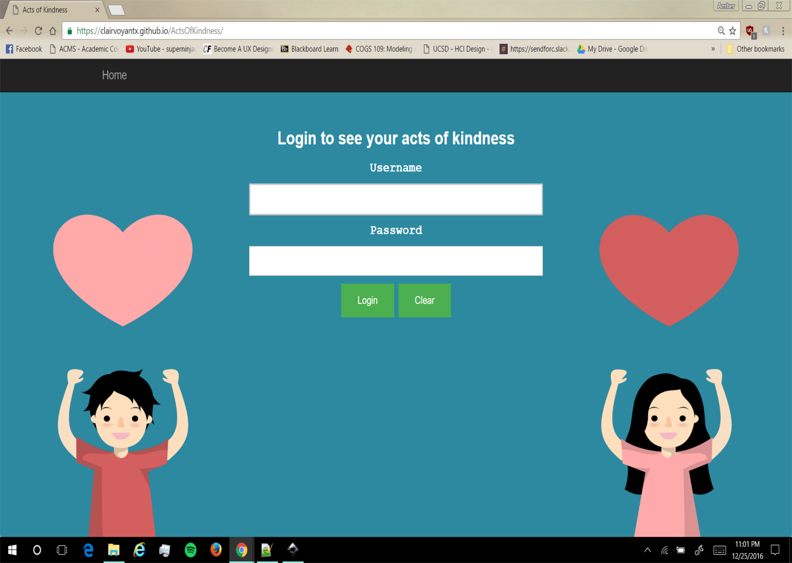
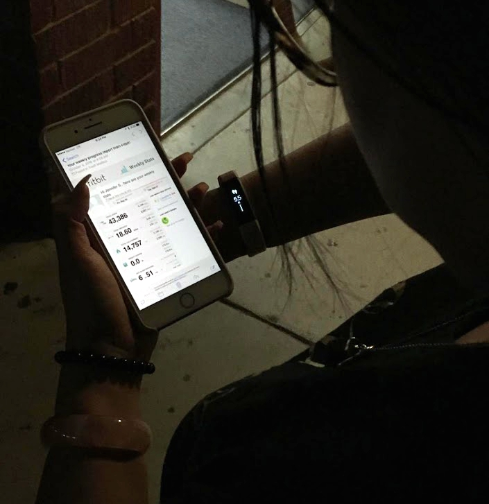
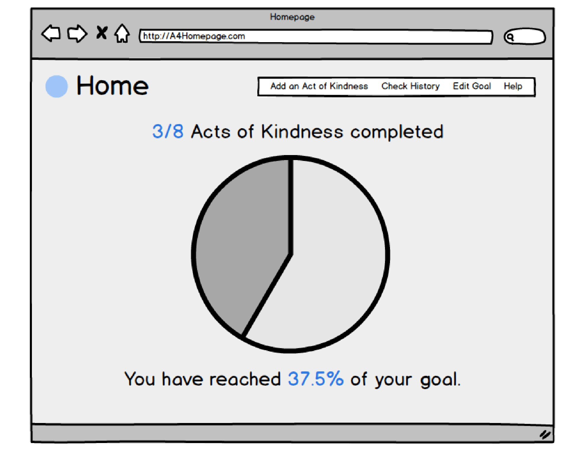
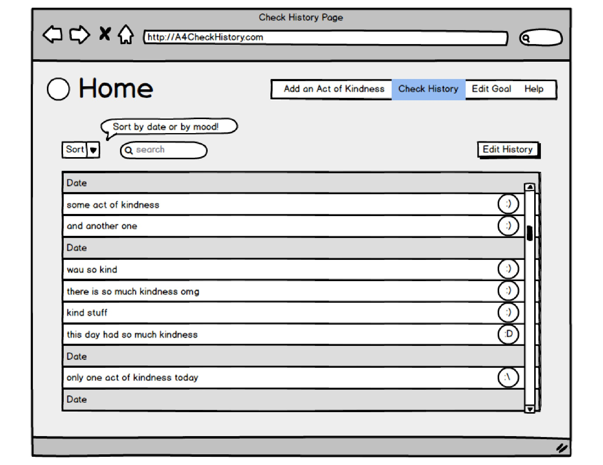
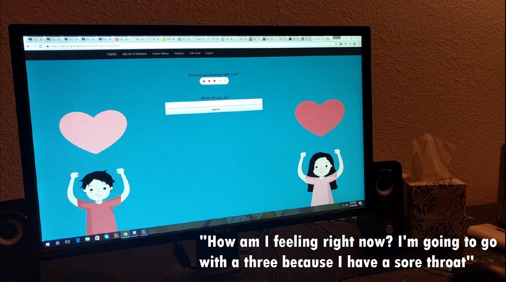
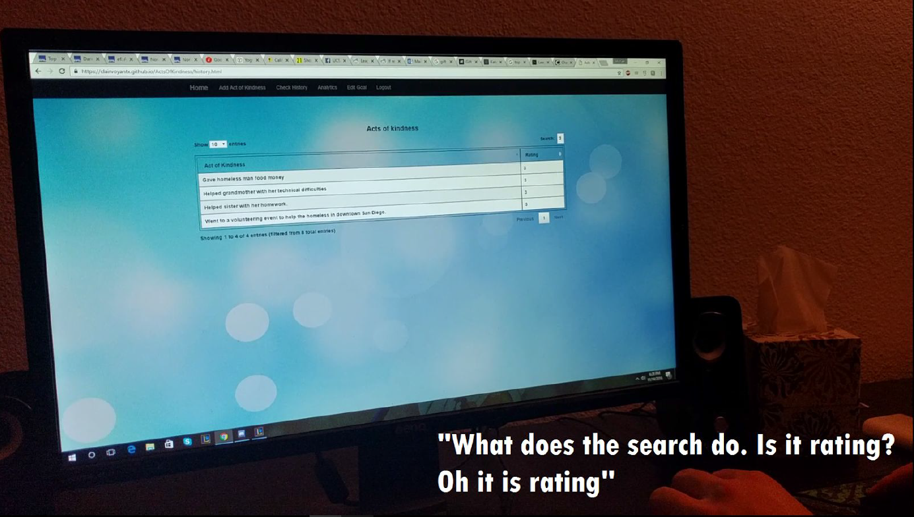
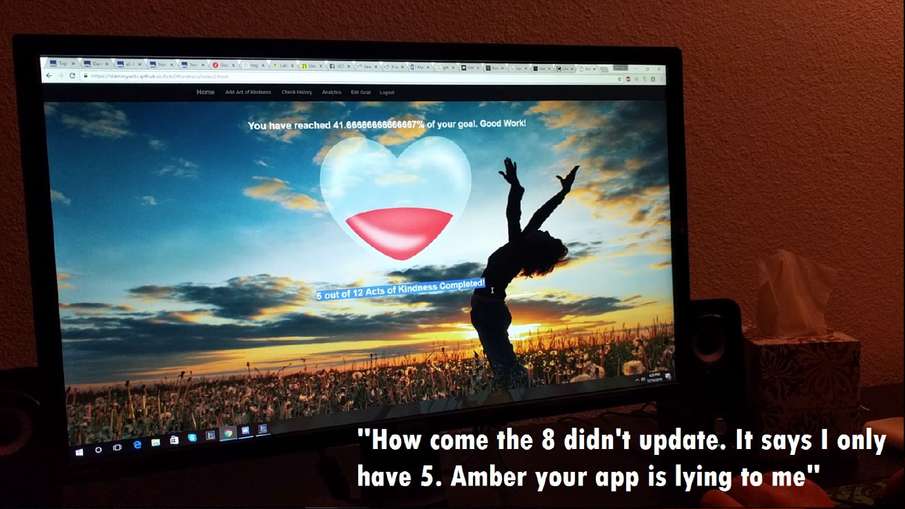
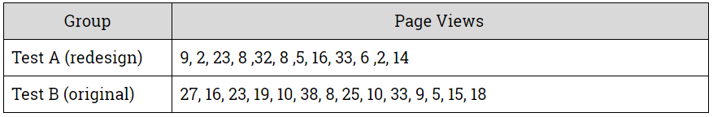
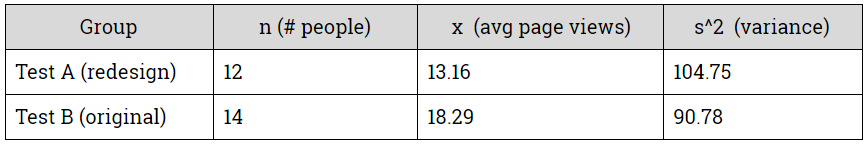
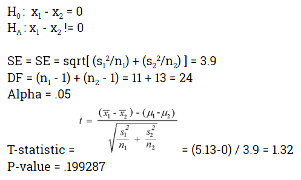

Acts Of Kindness

User Research • Paper Prototypes • Wireframes • A/B Testing • Data Analyst • Illustration
Human-Computer Interaction Project
In one of my courses, I worked in a team of three to create a novel, personal-informatics web application. Our application, Acts of Kindness, is meant to encourage users to perform more altruistic activities in their daily lives by tracking their recorded behaviors and providing users with positive feedback and opportunities to reflect on their own personal growth for empowerment.
Within ten fast-paced weeks, our team conducted user interviews, created storyboards, sketched out paper prototypes, crafted wireframes, built a web application, and tested using various methods throughout the entire process to iterate and improve upon our overall core functionality.
Feel free to check out Acts of Kindness here! To explore the application, just click "Login" right away. You can also watch the video below.
Our Process
Research
Our process started with needfinding by conducting contextual inquiry and personal interviews. For me specifically, since my section theme was personal informatics, I wanted to delve into the many different types of ways users track their various behaviors and the specific goals they wished to accomplish using their tracking tools. I interviewed three different users about their behaviors and asked them each to walk me through one of their tracking applications. Unfortuneately, I was unable to do a diary study because of time constraints.

Ultimately, from my interviews, I learned that users want to optimize their time and energy when self-tracking their behaviors, but they might not always know what they want, where to start, or how to do so without looking at previous information. This user point of view definitely set the framework for the core functionality of our application which aimed at providing users with the feedback and history necessary to guide users to meet their goals.
A Novel Idea
For the actual development of our application, our team had several taboo themes to avoid: finance, fitness, scheduling, productivity, diet, sleep, restaurants, auto, and gaming. These constraints definitely pushed our team to think creatively to develop an idea that had not been explored as thoroughly.
The inspiration for Acts of Kindness essentially came from a need for empowerment and spreading love. As university students with hectic schedules, many of us are often burnt out and forget to practice self-care. However, research has shown that one way to reduce stress and promote social belonging is to do nice things for others. With this in mind, our team wanted to help our target audience, which primarily consisted of university students, to boost their mental health and well-being, encourage a more supportive community, and give users the feedback that could help them practice doing more kind acts.
Paper Prototypes
With our novel idea and our users' needs in mind, I created paper prototypes of the interactions our users could do using our web application.


Prototypes in hand, we went around and asked other project design groups to evaluate our user interaction flow using Neilson's 10 Usability Heuristics and learned the following:
- Our application made nagivation unclear after leaving the home page
- After submitting their information, users do not receive immediate feedback and, as a result, are unsure if their submission was successful.
- There is no "edit" functionality to help users correct slips and errors
- The wording of the goals on the home page might be inconsistent and confusing after users have updated their goals or changed their current complete goals.
Wireframes
After having received feedback on our paper prototypes, our team moved onto higher-fidelity prototyping by creating wireframe mock-ups using Balsamiq and using HTML, CSS, and Bootstrap frameworks to code the initial page navigations


User Testing
After having received feedback on our paper prototypes, our team moved onto higher-fidelity prototyping by creating wireframe mock-ups using Balsamiq and using HTML, CSS, and Bootstrap frameworks to code the initial page navigations
Throughout the next few weeks, our team's main developer used Javascript, jQuery, AJAX, JSON files, and local storage to create the different functionalities of the pages and to allow our web application to take in user input. Once Acts of Kindness was finished in its intial stages as a web application, I had three users interact with our application and had them participate in think-aloud-activities to better understand their process and goals when using Acts of Kindness as a personal-informatics tool.



Here are a few of the takeaways we learned and pain points we identified from user testing:
- Our users had a different mental model than our team when we implemented the "Add and Act of Kindness" page. We wanted users to think about their mood during the instance that they helped another individual, but testing showed that users entered their current mood
- At first glance, it was difficult for users to understand what the search functionality was for on the "Check History" page
- The homepage did not update the user goal's appropriately after changing the total number of goals. This was a major bug on our end that we caught thanks to user testing
- Users did not have an opportunity to delete or edit their history of acts if they made a mistake or error
Using our observational data, our team fixed the errors in our application and created a second redesigned page of our "Edit Settings" page which allowed users to update their history of Acts. Using this redesign, our team wanted to test whether users would navigate through less pages of our application with the redesign. This would suggest that users might be looking at less pages trying to find their needed information. To accomplish this, we conducted an A/B Test using Google Analytics.
We had a total of 26 distinct user sessions (12 individuals who were directed to the original design and 14 individuals who were directed to the redesign). We used the total number of page views from the user's first session on our web application. I took the liberty of performing a difference between two means two tailed t-test since our two groups were independent and the data we were using was continuous. We had to assume that the distribution between two groups was approximately normal.



In the end, our A/B testing showed that there was no statistical difference in the number of pageviews between the original page and the redesign. However, since we had a relatively small sample size and had to assume normalcy, our team used our best judgement as designers and decided to still keep our redesigned page to avoid violating user control and freedom. After touching up Acts of Kindness with some visual consistencies, our web application was finalized.
Illustration
One of my roles as part of the team was to assist in creating the illustrations and visual design of the application. Their were a few contraints on exactly what our team was able to brand and customize because of our team's personal limits on coding ability.
I created the main background illustration of the two individuals holding up the heart that was used for the home page, the "Add Act of Kindness" page, and the "Edit" page. I also created the filled-up-heart illustration that can be seen on the first page. You can read more about these illustrations here.
Reflection
Overall, I definitely feel Acts of Kindness has room for some serious improvement. I do recognize that there were time constraints and deadlines which prevented our team from dedicating more time and effort to certain aspects of our application. It was also the first time any of our group members really worked with front-end web development and local storage. However, I believe that through this project, I was able to understand design more in depth and how products go from start to finish by being a part of the process the whole way through. It also really opened up my eyes to the amount of work goes on when developing such a fast-paced project and I truly appreciate all the efforts that my two hard-working teammates put in. Also, after this course, I really want to improve on my own coding abilities, not just to build empathy with developers, but for my own personal growth.
Anyways, bringing the topic back to our web application, here are some of the things I would like to improve about Acts of Kindness if given more time:
- Even though this was our first iteration and essentially our MVP, I think our team could have added a bit more functionality and user interactions, such as more data visualizations or allow users to input more useful information for their own empowerment
- Make the branding and visualizations more consistent throughout the pages (we had trouble changing the backgrounds and resizing certain elements because of the frameworks and templates we used)
- Conduct user testing, A/B testing, and interviews with a larger number of users from different user groups to learn more about diverse user goals and motivations
- Change the background of our application to be more inclusive of all types of users (perhaps randomize the cartoon characters that are shown on each web page to be different people of color, genders, age, culture, etc.)
- Make the application responsive across multiple devices, not just web - many of our users accessed personal informatics tools through their mobile devices